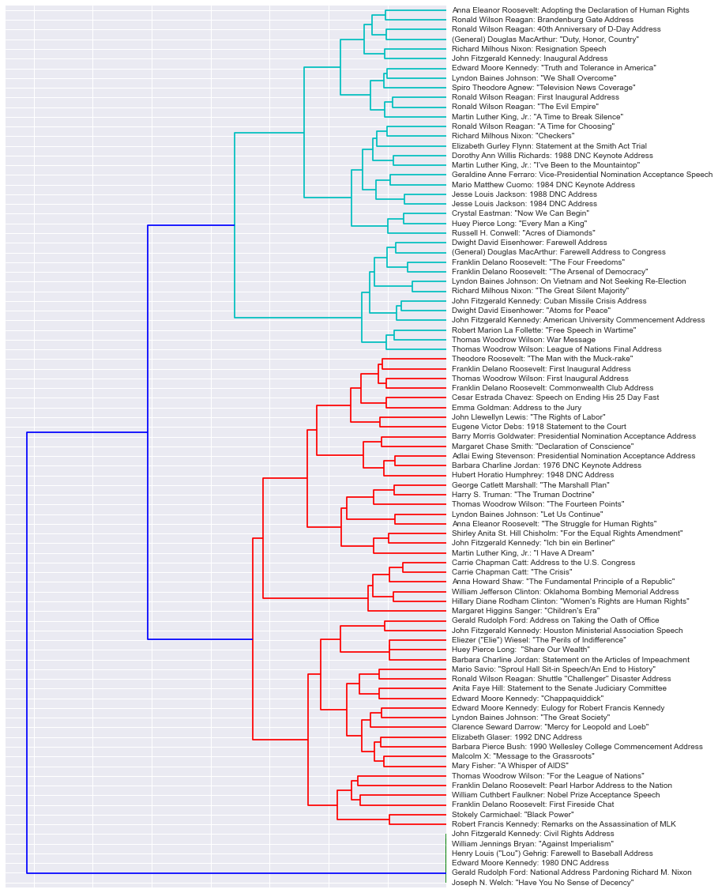
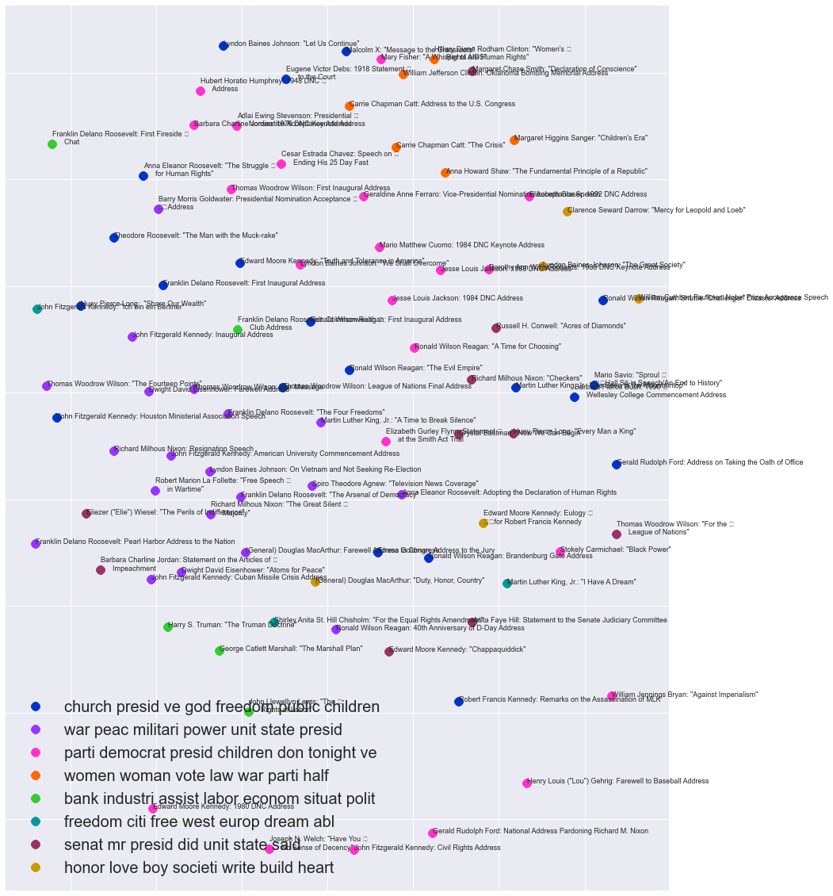

What people say is important. We remember people by the famous words they said, whether it be Martin Luther King Jr.'s "I have a dream", to J.F.K.'s, "Ask not what your country can do for you - ask what you can do for your country." In this day and age, what people say is even more important as everything can be recorded and archived indefinitely. We acutely see this in the news - the Huffington Post published an article today (April 17, 2016), titled, "Release of Clinton's Wall Street Speeches Could End Her Candidacy for President."
Thus, I propose to generate a corpus containing speeches, newspaper editorials, interview answers, and so on, labelled by their speakers/writers. With a large enough corpus, I can use an unsupervised machine learning algorithm to quickly cluster the texts into groups. These groups may reveal surprising connections between different people. However, it would be even more interesting to take new texts - the political speeches of current presidential candidates, in particular - and see which cluster each falls into. We could ask AND answer questions like: Is Donald Trump's rhetoric geometrically closer to that of Mother Theresa or Adolf Hitler? As many famous figures give many speeches, I also propose to work with people's individual corpuses. We could then see what the major themes are that create each cluster, and thus are seemingly most important to that person (assuming a politican's talk is genuine). By including the speech's date as a variable, we could even create a timeline showing how themes change with respect to time. Again, current political candidates' speeches would be ideal for such a project - they talk a lot, as well as flip-flop a lot, and using a computer to figure out what they supposedly care about is much easier and more enjoyable than listening to all of that talk!
This project would be interesting to the general public, as it involves famous, notable people, both villainous and (literally) saintly, as well as current politicans. It could even be interactive, by allowing a user to upload something they have written (or any piece of text not in the corpus) and then returning a list of the closest speakers and speeches/texts as well as the most common, important words that led to how the user's text was clustered. Having interesting, interactive visualizations of the relationships between their text and the famous words of others would engage users as well.
In order to get transcripts of famous speeches, I used Python's BeautifulSoup to scrape AmericanRhetoric.com. The primary webpage contained links to sub-pages, with each sub-page containing the transcript of a single speech.
After creating a corpus of all of the speech transcripts, I created a bag-of-words representation of the text, with word stemming, stop word filtering, and term frequency - inverse document frequency (TF-IDF). Each speech could then be represented as a vector, with each element representing the frequency of a particular word stem. I then calculated the distances between all pairs of speeches (using cosine similarity), and used those distances for Ward's method for hierarchical clustering, resulting in the following dendogram plot.
We can see that there are about 2 relatively large primary clusters (in red and teal) and 1 very tiny primary cluster (in green). If we look closely at the low-level clusters, we see some intuitive patterns and some not-so-intuitive patterns. For example, William Jefferson Clinton (i.e. Bill Clinton) and Hillary Diane Rodham Clinton are paired together, despite their seemingly different speech topics (Bill's speech is called Oklahoma Bombing Memorial Address, while Hillary's is Women's Rights are Human Rights). J.F.K.'s Cuban Missile Crisis Address is paired up with Dwight D. Eisenhouwer's Atoms for Peace, The Truman Doctrine is paired with The Marshall Plan, and both Jesse Jackson's 1984 and 1988 DNC Addresses are paired. Interestingly, the closest speech to Martin Luther King Jr.'s I have a Dream is J.F.K.'s Ich bin ein Berliner. Admittedly, I do not know the content of J.F.K.'s speech - only the anecdote/misconception that the title actually translates from German to I am a jelly-filled donut - however, I am now curious to read the transcript, and see if it is as inspiring and powerful as Martin Luther King Jr.'s. Another surprise is that Nixon's resignation speech is closest to JFK's Inaugural address - two very different presidents at two very different points in their careers.
Another way to group the speeches is by using k-means clustering, which is quite good for sparse and unstructured data. One of the parameters for scikit-learn's k-means clustering algorithm is the number of clusters - I made an initial choice of 8 clusters, but with more time and further refining of the project, I would definitely experiment with other cluster numbers. The following figure shows the different speeches, colored by which cluster they belong to. The top 7 words that are nearest to each cluster's centroid are also given, at the bottom left. Additionally, the x,y-coordinates of each speech are the result of multi-dimensional scaling (MDS), which allows one to represent the distance matrix with a lower-dimensional form whilst still somewhat preserving the distances in the original high-dimensional space.
The most interesting thing about this plot, other than the fact that k-means clustering gives slightly different results than Ward's method, is the top 7 words for each cluster. Note that the top 7 words are in their stemmed form, thus "peace" showing up as its stem, "peac". We can see some cool patterns here. For example, the 2nd cluster's top 7 words are: "war, peac, militari, power, unit, state, presid". Speeches that are grouped into this cluster are denoted by maroon dots, and include:
What would be very interesting is to overlay this figure with a political spectrum. Do democrats and republicans speak in different ways?
First, the way the initial vectorizer dictionary is created could be tweaked in many ways. Depending upon the question that I specifically want to answer, I could incorporate multi-word phrases, or exclude words I do not care about, so that the dictionary is more refined and able to capture the various relationships based on specific themes, phrases, and words. Additionally, there are many ways to encode a dictionary value's frequency - here, I used TF-IDF, but there are other possible methods that could/should be explored. Ditto with how words get stemmed, and how speeches get clustered.
Second, these figures are definitely exploratory in nature. I definitely would increase the number of speeches and texts in the corpus, with more web scraping. Additionally, the plots are not the best-formatted, particularly with the overlapping texts in the 2nd plot, the lack of understandable labels in the 3rd plot, etc. I am learning d3.js and dipmle.js right now, and would love to use those tools, instead of python, to create more beautiful and interactive data visualizations for the web! :)